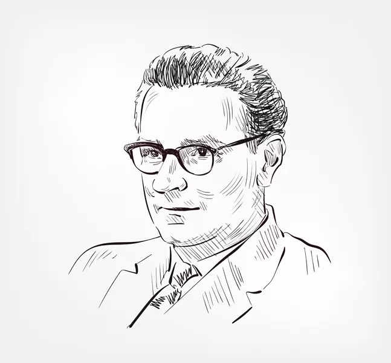

Человек, который первым создал программируемый компьютер и язык первых программистов, попал в мир вычислительной техники случайно. Увлечение конструированием и изобразительным искусством привело Конрада Цузе в высшую Техническую школу Германии на факультет архитектуры и гражданского строительства. Будучи студентом, при расчете строительства дорог и зданий ему приходилось решать множество линейных уравнений. А при помощи имеющихся на тот момент средств вычисления сделать это было достаточно сложно. К тому же это отнимало почти все свободное время. Именно тогда молодой изобретатель задумался над созданием собственной вычислительной машины, которая помогла бы облегчить процесс расчетов. К разработке прототипа машины Цузе приступил, не взирая на отсутствие необходимого опыта в области механики и вычислительной техники. Юноша реализовал свою идею прямо в квартире своих родителей, заняв почти всю площадь гостиной. Разработка механического устройства шла в течение двух лет и привела к пониманию, что машина может работать на основе двоичного кода, но пока не является совершенной. Такая обособленность не помешала ученому прийти к осознанию, что его прототип компьютера необходимо оснастить собственным программным управлением. Так в 1942 году зародился Планкалкюль — первый в мире высокоуровневый язык программирования. В переводе на русский это название соответствует выражению «планирующее исчисление». Конрад Цузе создал его для программирования собственного компьютера Z4, но более поздние исследования показали, что он мог применяться и на других подобных компьютерах того времени. К сожалению, труды исследователя не оказали особого влияния на развитие общего программирования. Все дело в том, что работы долгое время не были доступны для общего обозрения и были опубликованы лишь в 1792 году, а Планкалкюль доведен до рабочего состояния и того позже – в 2000 году. Сегодня можно лишь предполагать, как бы исследования Цузе отразились на программировании, если бы сразу стали доступны современникам. Однако, неоспоримый факт, что Конрад Цузе стал прародителем первого языка программистов, останется неоспоримым на века.